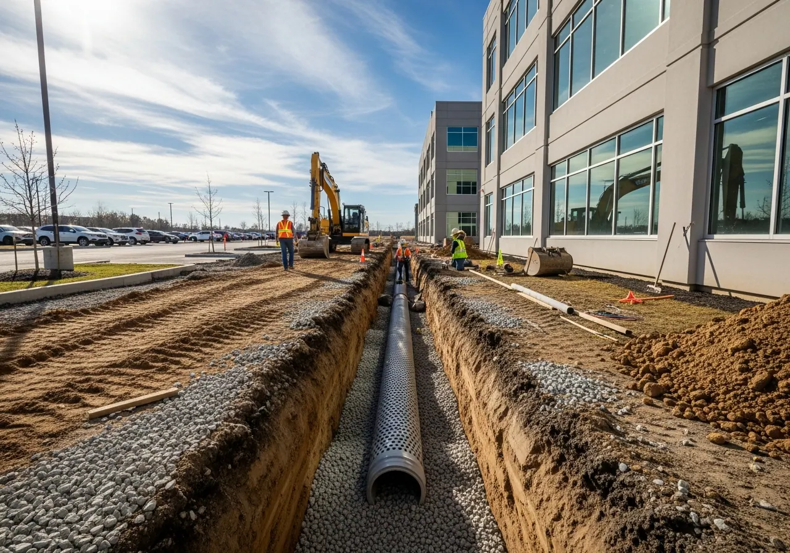

Drainage Solutions For Large Properties — Greenville, Spartanburg & Charlotte
Standing water, soggy fields, and washouts make property care harder. We look for the cause and plan drainage work around the way your land is used.
Start with Where the Water Goes
Poor drainage is one of the most common — and most costly — problems facing large property owners in the Carolinas. Heavy clay soils, compacted ground, improper grading, and flat topography create conditions where water sits, roots suffocate, structures erode, and maintenance costs multiply.
We'll trace where water enters, where it collects, and where it needs to drain. Then we'll explain the work we recommend and any engineering, permits, or specialist help needed before installation.

Drainage Services
- French drain installation — perforated pipe and gravel systems to intercept and redirect subsurface water
- Surface drainage swales — graded channels to carry surface runoff away from structures and fields
- Retention and detention pond planning and construction
- Catch basin and inlet installation
- Underground drainage pipe installation
- Agricultural drainage — tile drainage for fields and pastures
- Ditch clearing, shaping, and lining
- Regrading for drainage correction
- Erosion control and slope stabilization in drainage zones
- Stormwater maintenance and service records
Common Drainage Problems We Solve
- Standing water in fields, commercial grounds, or near structures after rain
- Soggy, compacted soil that won't grow healthy turf
- Erosion on slopes, embankments, or around ponds
- Flooded access roads or driveways
- Drainage ditches that are silted, blocked, or undersized
- Retention ponds overflowing or failing to drain properly
- Wet basements or foundations on large rural properties
Agricultural Drainage
For farm and agricultural properties, drainage is directly tied to productivity. Saturated fields can't be worked, can't support healthy root systems, and lose topsoil to runoff. P1 installs agricultural drainage systems — including field tile drainage and perimeter ditching — that improve field trafficability and long-term productivity.
Drainage FAQs
Why does my property have standing water after rain?+
Water can collect because of clay soils, compacted ground, blocked drains, or the way the land slopes. We start by looking at where it enters, where it pools, and where it can go. Some sites also need an engineer's assessment.
What drainage systems does P1 install?+
We install and maintain French drains, swales, catch basins, drainage pipe, and farm drainage systems. We also handle grading and pond-related work. We'll explain any permits, engineering, or specialist help needed for your property.
Can P1 fix drainage on farm fields and pastures?+
Yes. We handle field drainage, perimeter ditches, and grading to help move water off working ground. We'll review the land, available outlets, and any approvals needed before recommending the work.
Does P1 handle stormwater compliance for commercial properties?+
We maintain and repair ponds, ditches, and other drainage features. Your property team and the appropriate professionals remain responsible for regulatory compliance and required inspections. We'll confirm the records and specialist work needed before starting.
Call +1 (704) 221-8928 or request a free estimate online to discuss your drainage problem.
Drainage Is One Part of the Campus Exterior.
Plan drainage repairs alongside pond care, vegetation, and access around your facility.
Explore secure facility exterior managementExplore More With P1
Services Connected to Drainage
Find help with the slopes, ponds, and damaged ground around a drainage problem.
Let's Walk Your Property
Tell us where it is and what's going on. The site visit and written estimate are free.